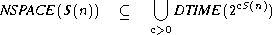
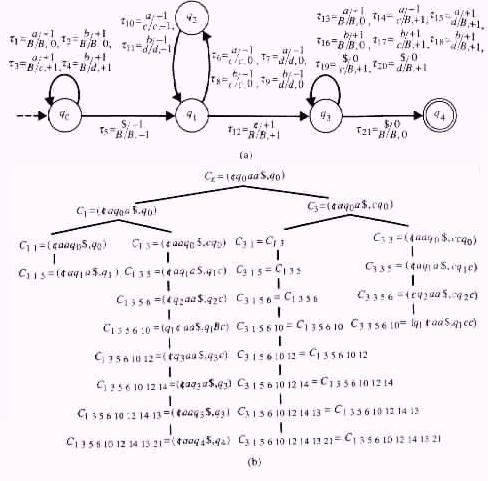
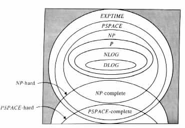
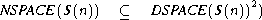
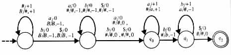
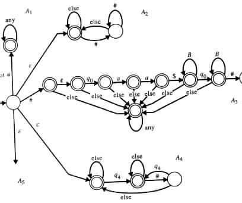

C2.
C2.
From Nondeterministic Space to Deterministic Time
From Nondeterministic to Deterministic Space
PSPACE-Complete Problems
Closure Properties
By Corollary 5.3.1 NTIME (T(n)) Í DSPACE (T(n)) and so PSPACE contains NP. Moreover, by Theorem 5.5.1 PSPACE is contained in EXPTIME . These containments suggest that PSPACE be studied similarly to NP. Specifically, such a study will be important in the remote possibility that NP turns out to be equal to P -- the same reason the study was important for NP in the first place. However, if NP turns out to be different from P, then the study of PSPACE might provide some insight into the factors that increase the complexity of problems.
Lemma 5.5.1 An S(n) ³ log n space-bounded Turing machine M can reach at most 2dS(n) configurations on a given input of length n. d is assumed to be some constant dependent only on M.
Proof Consider any Turing machine M = <Q, S, G, d, q0, B, F> of space complexity S(n) ³ log n. For input x of length n the Turing machine M can have at most |Q| (n + 2) (S(n)|G|S(n))m different configurations. |Q| denotes the number of states of M, m denotes the number of auxiliary work tapes of M, and |G| denotes the size of the auxiliary work-tape alphabet G of M.
The factor of |Q| arises because in the configurations (uqv, u1qv1, ¼, umqvm) which satisfy uv = ¢x$ the state q comes from a set Q of cardinality |Q|. The factor n + 2 arises because the input head position |u| can be in n + 2 locations. S(n) represents the number of possible locations for the head of an auxiliary work tape, and |G|S(n) represents the number of different strings that can be stored on an auxiliary work tape.
The expression |Q| (n + 2) (S(n)|G|S(n))m has a constant d such that
| |Q| (n + 2) (S(n)|G|S(n))m | = | 2log |Q|2log (n+2)(2log S(n)2S(n)log |G|)m | ||
| £ | 2dS(n) |

From Nondeterministic Space to Deterministic Time
By Corollary 5.3.1 nondeterministic and deterministic time satisfy the relation NTIME (T(n)) Í È c>0DTIME (2cT(n)). The following theorem provides a refinement to this result because NTIME (T(n)) Í NSPACE (T(n)).
Definition
The configurations tree of a Turing machine M on input x is a possibly infinite tree O
defined in the following manner. The root of O is a node labeled by the initial
configuration of M on input x. A node in O, which is labeled by a configuration C1,
has an immediate successor that is labeled by configuration C2 if and only if
C1 C2.
Theorem 5.5.1 If S(n) ³ log n then

Proof Consider any S(n) space-bounded Turing machine M1 = <Q, S, G, d, q0, B, F>. A deterministic Turing machine M2 can determine if M1 accepts a given input x by determining whether the configurations tree O, of M1 on input x, contains an accepting configuration. M2 can do so by finding the set A of all the configurations in O, and then checking whether the set contains an accepting configuration. The set A can be generated by following the algorithm.
Example 5.5.1 Let M1 be the Turing machine in Figure 5.5.1(a).
|

|
The algorithm in the proof of Theorem 5.5.1 inserts Ce to A in Step 1. The first iteration of Step 2 determines the immediate successors C1 and C3 of Ce, and inserts them into A. The second iteration considers either the configuration C1 or the configuration C3.
If C1 is considered before C3, then C11 and C13 are the configurations contributed by C1 to A. In such a case, C3 contributes C33 to A.
Upon completion A contains the configurations Ce, C1, C3, C1 1, C1 3 (= C3 1), C3 3,
C1 1 5, C1 3 5 (= C3 1 5), C3 3 5, ¼ , C3 1 5 6 10 12 14 13 21.
From Nondeterministic to Deterministic Space
The previous theorem, together with Corollary 5.3.1, imply the hierarchy DLOG Í NLOG Í P Í NP Í PSPACE Í EXPTIME (see Figure 5.5.2).
|

|
The following theorem provides an approach more economical in space, than that of the proof of the previous theorem. However, the improvement in the space requirements is achieved at the cost of slower simulations.
Theorem 5.5.2 If S(n) is a fully space-constructible function and S(n) ³ log n then

Proof Consider any cS(n) space-bounded Turing machine M1, where S(n) ³ log n is fully space-constructible. With no loss of generality it can be assumed that on entering into an accepting configuration the auxiliary work tapes of M1 are all blank, and the input head of M1 is on the right endmarker $. In addition, it can be assumed that M1 has exactly one accepting state qf. Consequently, an accepting computation of M1 on a given input x must end at the accepting configuration (¢xqf$, qf, ¼, qf).
By definition, M1 accepts a given input x if and only if M1 on input x has a sequence of moves, starting at the initial configuration C0 of M1 on input x and ending at the accepting configuration Cf of M1 on input x. By Lemma 5.5.1 the Turing machine M1 can reach at most 2dS(n) different configurations on an input of length n. By Theorem 5.5.1 each configuration requires at most d's(n) space when the input string is excluded. Consequently, M1 accepts x if and only if it has a sequence of at most 2dS(|x|) moves that starts at C0 and ends at Cf.
A deterministic Turing machine M2 can determine whether M1 accepts an input x by the algorithm in Figure 5.5.3.
The algorithm uses a recursive function R(C1, C2, t) whose task is to determine whether M1 on input x has a sequence of at most t moves, starting at C1 and ending at C2. The property is checked directly when t £ 1. Otherwise, it is checked recursively by exhaustively searching for a configuration C of M1, such that both R(C1, C, ét/2ù) and R(C, C2, ët/2û) hold.
The algorithm uses O(S(n)) levels of recursion in R(C1, C2, t). Each level of recursion requires space O(S(n)). Consequently M2 uses O( (S(n))2) space.
When it derives the configurations of M1, M2 relies on the property that S(n) is
space-constructible.
Approaches similar to those used for showing the NP-hardness of some given problems, can also be used for showing PSPACE-hardness. The following theorem is an example of a PSPACE-complete problem whose PSPACE-hardness is shown by a generic transformation.
Theorem 5.5.3 The membership problem for linear bounded automata or, equivalently, for L = { (M, x) | M is a linear bounded automaton that accepts x } is a PSPACE-complete problem.
Proof The language L is accepted by a nondeterministic Turing machine MU similar to the universal Turing machine in the proof of Theorem 4.4.1. MU on input (M, x) nondeterministically finds a sequence of moves of M on x. MU accepts the input if and only if the sequence of moves starts at the initial configuration of M on input x, and ends at an accepting configuration. The computation of MU proceeds in the following manner.
MU starts by constructing the initial configuration C0 of M on input x. Then it repeatedly and nondeterministically finds a configuration C that M can reach in one step from the last configuration that has been determined for M by MU . MU accepts (M, x) if and when it reaches an accepting configuration of M.
By construction, MU requires a space no greater than the amount of memory required for recording a single configuration of M. A single configuration (uqv, u1qv1, ¼, umqvm) of M requires space equal to the amount of memory needed for recording a single symbol times the number of symbols in the configuration, that is,
| O(|M|( (1 + |uv|) + (1 + |u1v1|) + · · · + (1 + |umvm|) )) | = | |||
| O(|M|(m + 1)(1 + |x|)) | = | O(|M|2|x|) |
To show that the membership problem for L is PSPACE-hard, consider any problem K in PSPACE. Assume that A is a deterministic Turing machine of space complexity S(n) = O(nk) that decides K. From (A, S(n)) a polynomially time-bounded, deterministic Turing transducer TK can be constructed to output the pair (M, y) on input x.
y is assumed to be the string #jx, where j = S(|x|) and # is a new symbol. M is
assumed to be a linear bounded automaton, which on input #jx simulates the computation
of A on x with j space. That is, M accepts y if and only if A accepts x within j space.
Example 5.5.2 Let A be the Turing machine in Figure 5.3.3. Using the terminology in the proof of Theorem 5.5.3, the corresponding linear bounded automaton M can be the one given in Figure 5.5.4.
|

|
M starts each computation by copying the leading symbols #, from the input
to its auxiliary work tape. Then M nondeterministically locates its auxiliary
work-tape head over one of the symbols #. Finally, M follows a computation similar
to A's on the remainder of the input. The main difference is that M expects
the symbol # whenever A scans the left endmarker ¢ or a blank symbol B.
The following theorem is an example of a problem whose PSPACE-hardness is shown by reduction from another PSPACE-hard problem.
Theorem 5.5.4 The inequivalence problem for finite-state automata is PSPACE-complete.
Proof Let (M1, M2) be any given pair of finite-state automata. A Turing machine M can determine the inequivalency of M1 and M2 by finding nondeterministically an input a1 · · · aN that is accepted by exactly one of the finite-state automata M1 and M2.
M starts its computation by determining the set S0 of all the states that M1 and M2 can reach on empty input. With no loss of generality it is assumed that M1 and M2 have disjoint sets of states. Then M determines, one at a time, the symbols in a1 · · · aN . For each symbol ai that M determines, M also finds the set Si (from those states that are in Si-1) that M1 and M2 can reach by consuming ai.
M halts in an accepting configuration upon, and only upon, finding an SN that satisfies either of the following conditions.
To show that the inequivalence problem for finite-state automata is a PSPACE-hard problem, it is sufficient to demonstrate the existence of a polynomially time-bounded, deterministic Turing transducer T that has the following property: T on input (M, x), of a linear bounded automaton M and of an input x for M, outputs a pair (M1, M2) of finite-state automata M1 and M2. Moreover, M1 and M2 are inequivalent if and only if M accepts x.
M1 can be a finite-state automaton that accepts a given input if and only if the input is not of the form #C0#C1# · · · #Cf#. C0 is assumed to be the initial configuration of M on input x. Cf is assumed to be an accepting configuration of M on input x. Ci is assumed to be a configuration that M can reach in one move from Ci-1, i = 1, ¼, f. The length of each Ci is assumed to equal (n + 3) + m(S(n) + 1), m is assumed to be the number of auxiliary work tapes of M, S(n) is assumed to be the space complexity of M, and # is assumed to be a new symbol.
M1 can determine that an input is not of such a form, by nondeterministically choosing to check for one of the following conditions.
By construction, M1 accepts all inputs if and only if M does not accept x. The result
then follows immediately if M2 is taken to accept all the strings over the input alphabet of
M1.
Example 5.5.3 The Turing machine M in Figure 5.5.1(a) has space complexity of S(n) = n + 2. For the string x = aa the Turing machine M in the proof of Theorem 5.5.4 has the corresponding finite-state automaton M1 of Figure 5.5.5.
|

|
On a given input M1 nondeterministically chooses to execute one of the subcomponents A1, A2, A3, A4, or A5.
A1 checks that the input does not start with the symbol #. A2 checks that the input does not end with the symbol #. A3 checks that the string between the first two # symbols is not the initial configuration of M on input aa. A4 checks that the accepting state q4 does not appear in the last configuration Cf.
A5 checks for inconsistency between consecutive configurations. Its specification is
omitted here.
The classes NTIME (T(n)) and NSPACE (S(n)) are closed under union and intersection (see Exercise 5.1.3(a)), but it is not known whether they are closed under complementation. However, the following theorem holds for NSPACE (S(n)).
Theorem 5.5.5 The class NSPACE (S(n)) is closed under complementation for S(n) ³ log n.
Proof Consider any S(n) space-bounded, nondeterministic Turing machine M1. From M1 an S(n) space-bounded, nondeterministic Turing machine M2 can be constructed to accept the complementation of L(M1).
Specifically, on a given input x the Turing machine M2 determines whether the configurations tree O of M1 on x contains an accepting configuration. If so, then M2 rejects x. Otherwise, M2 accepts x.
M2 traverses O by stages, according to the algorithm in Figure 5.5.6(a).
|
* C of exactly i moves that
starts at the initial configuration C0 of M1 on input x }.
M2 halts during the ith stage in a nonaccepting configuration if it determines an accepting configuration in Oi. However, it halts at the end of the ith stage in an accepting configuration if it determines that Oi cannot contain new configurations (i.e., by determining that i is greater than the number of configurations M1 can reach on input x).
The configurations C that are in Oi are found nondeterministically from i and the
number N of configurations in Oi. In particular, M2 simulates the instructions of the
form "for each configuration C in Oi do a" in accordance with the algorithm in
Figure 5.5.6(b). The nondeterminism is required for simulating the sequences of moves
C0 * C.
M2 determines the number N of configurations in Oi+1 by determining which configuration can be directly reached from those that are in Oi. The algorithm is given in Figure 5.5.6(c).
The result now follows because by Lemma 5.5.1, the Turing machine M1 can reach at
most 2O(S(n)) different configurations on inputs of length n, that is, M2 considers only
i £ 2O(S(n)) levels of O.
The class DTIME (T(n)) is closed under union , intersection, and complementation (see Exercise 5.1.3(b)). The closure of DSPACE (S(n)) under union, intersection, and complementation can be easily shown by direct simulations. For the last operation, however, the following theorem is required.
Definitions
An s space-bounded configuration is a configuration that requires at most s space in each
auxiliary work tape. An s space-bounded, backward-moving-configurations tree of a
Turing machine M is a tree O, defined in the following manner. The root of O is labeled
by an s space-bounded configuration of M. A node in O, labeled by a configuration C2,
has an immediate successor labeled by configuration C1 if and only if C1 is an s
space-bounded configuration of M such that C1 C2.
Theorem 5.5.6 Each S(n) space-bounded, deterministic Turing machine M1 has an equivalent S(n) space-bounded, deterministic Turing machine M2 that halts on all inputs.
Proof Consider any S(n) space-bounded, deterministic Turing machine M1 = <Q, S, G, d, q0, B, F>. M2 can be of the following form. M2 on a given input x determines the space sx that M1 uses on input x. Then M2 checks whether M1 has an accepting computation on input x. If so, then M2 halts in an accepting configuration. Otherwise M2 halts in a rejecting one.
To determine the value of sx the Turing machine M2 initializes sx to equal 1. Then M2 increases sx by 1 as long as it finds an sx space-bounded configuration C1, and an (sx + 1) space-bounded configuration C2, such that the following conditions hold.
C2.
To check whether M1 has an accepting computation on input x the Turing machine M2 searches for an sx space-bounded, backward-moving-configurations tree that satisfies the following conditions.
|
The algorithm is used only on configurations Croot, such that if Croot C' then C' is
not an s space-bounded configuration. This property is used by the algorithm to determine
the root of Os upon backtracking.
The algorithm relies on the observation that the determinism of M1 implies the following properties for each s space-bounded, backward-moving-configurations tree Os.
 N then reject
N then reject